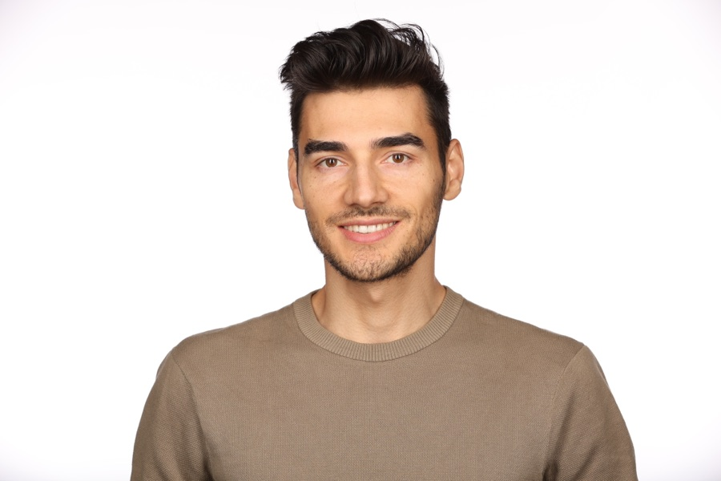
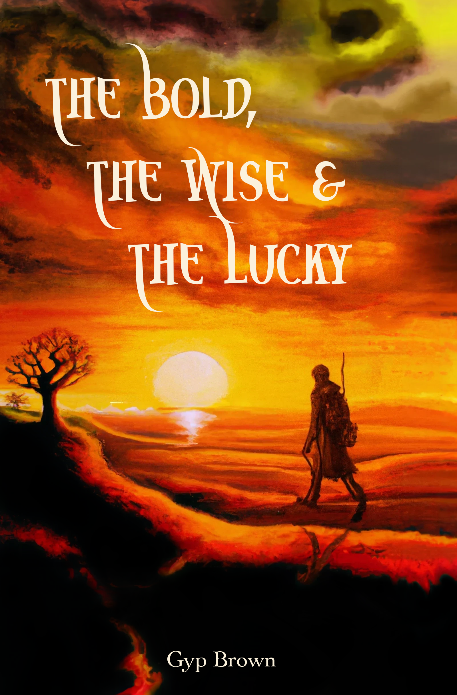
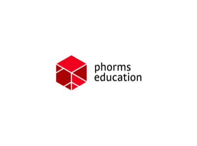
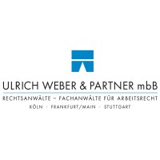

News
- Oct 2026
- Oct 2026
- Sep 2026
- Aug 2026
- Jul 2026
-
Jun 2026
Started as a visiting researcher at UCL's Systems Security Lab with Prof. Lorenzo Cavallaro.
-
Jun 2026
Obliviate was accepted at ECCV 2026.
-
2026
Two papers at ICML 2026: GEM (Spotlight) and Erased but Not Forgotten. I was also recognised as a Gold Reviewer.
About Me

I am an ELLIS PhD Candidate at the Technical University of Darmstadt (Multimodal AI Lab, Prof. Marcus Rohrbach) and currently a visiting researcher at UCL's Systems Security Lab (Prof. Lorenzo Cavallaro). My research lies at the intersection of multimodal AI, robustness, and security. I am interested in understanding how increasingly capable AI systems can fail, be manipulated, or behave unexpectedly. I also want to design safeguards that make them more trustworthy and aligned with human interests.
I hold an M.S. in Operations Research from Columbia University and a B.S. in Industrial Engineering from KIT. Before starting my PhD, I worked as an independent ML engineer, conducting more than 60 workshops that helped organizations adopt AI in practice. My long-term ambition is to contribute to the development of safe and beneficial artificial intelligence while strengthening scientific collaboration across Europe.
Having lived, studied, and worked in several countries, I enjoy connecting people, ideas, and disciplines. Outside research, I am an avid chess player, traveler, writer, lifeguard, and outdoor enthusiast.
Research Interests
The most beautiful things in the world cannot be seen or touched, they are felt with the heart.” Antoine de Saint-Exupéry
Publications
* Equal contribution
Latest Acceptance
Accepted at NeurIPS 2026 with three clear Accepts from the reviewers. The paper presents a novel backdoor showing that unified models can poison themselves.
All Publications
Book

Curriculum Vitae
Dare To Act
Uniting science, education, and extreme endurance for ocean conservation.
As co-founder of Dare To Act, I champion ocean conservation through endurance challenges and community action such as beach cleanups in Florida and across the US. We prioritize recycling materials gathered during these cleanups and fundraise to support 501(c)(3) organizations dedicated to direct ocean cleaning initiatives.

